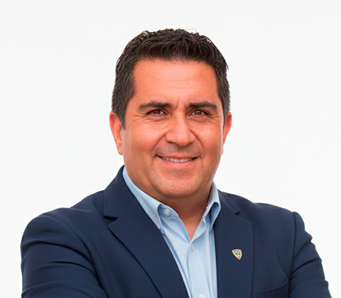
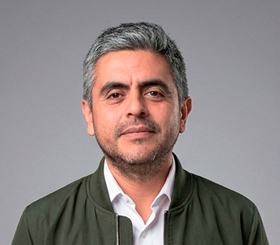
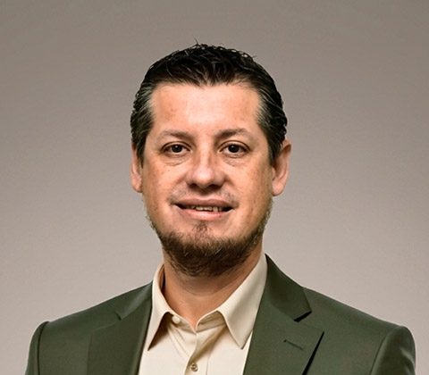
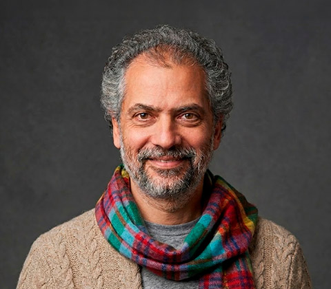
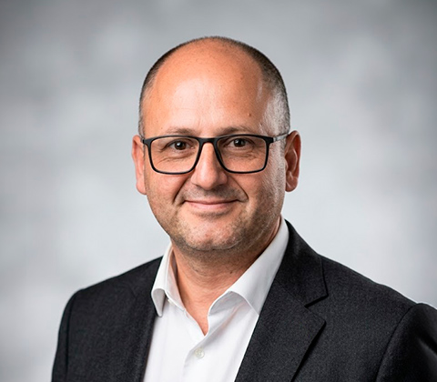
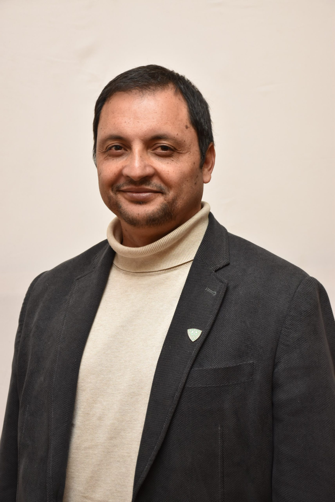

Uso responsable
Diseñar e implementar lineamientos normativos y buenas prácticas para el uso de IA en el ámbito académico.
Comité Universitario de Inteligencia Artificial
Universidad de Atacama
Comité Universitario de Inteligencia Artificial
Universidad de Atacama
Inteligencia Artificial al Servicio de las Personas
El comité
Sapiens.IA es la instancia académica, técnica y colaborativa de la Universidad de Atacama para orientar el desarrollo y uso responsable de la inteligencia artificial en el quehacer universitario.
Su propósito es acompañar el diseño, la implementación y el seguimiento de orientaciones institucionales que resguarden la integridad académica, la equidad, la transparencia y la calidad educativa.
Conoce sus objetivosAprender y enseñar con una mirada crítica y responsable.
Explorar aplicaciones y sus efectos desde distintas disciplinas.
Dialogar con la comunidad y el entorno regional.
La tecnología amplía posibilidades.
Las personas orientan su sentido.
Nuestro propósito en acción
La Resolución Exenta N.º 210/2026 define un objetivo general y seis objetivos específicos para orientar el trabajo de Sapiens.IA.
Objetivo general
Fortalecer la gobernanza institucional, la formación académica, la investigación y la transformación digital mediante colaboración interdisciplinaria, con atención al desarrollo sostenible y al bienestar de la comunidad universitaria. Contribuir a que la UDA sea un referente regional y nacional en esta área.
Seis líneas de trabajo definidas en la resolución.
Diseñar e implementar lineamientos normativos y buenas prácticas para el uso de IA en el ámbito académico.
Generar espacios de encuentro entre académicos, estudiantes, funcionarios y actores externos sobre los impactos de la IA en la educación superior.
Fomentar proyectos que desarrollen aplicaciones y reflexión crítica sobre el uso ético e innovador de la IA.
Fortalecer las capacidades técnicas, pedagógicas y analíticas de la comunidad universitaria mediante actividades formativas.
Asesorar a las unidades académicas y administrativas al incorporar herramientas, metodologías y buenas prácticas de IA.
Promover colaboración y diálogo ético con actores regionales, nacionales e internacionales para un uso responsable y sostenible.
Síntesis para lectura web. Consulta el texto oficial de la resolución.
Personas y disciplinas
La resolución designa representantes institucionales, de facultades, centros, institutos y de la Sede Vallenar.

Representación institucional
Representación institucional
Representación institucional

Representación institucional
Representación institucional
Facultad Tecnológica

Facultad de Ciencias de la Salud

Centros e institutos

Facultad de Ingeniería
Facultad de Ciencias Jurídicas y Sociales
Facultad de Ciencias Jurídicas y Sociales
Facultad de Humanidades y Educación
Sede Vallenar
Facultad de Medicina

Facultad de Ciencias Naturales
Archivo audiovisual
Dos registros audiovisuales disponibles para conocer experiencias y voces vinculadas a la inteligencia artificial en la UDA.
Conversación
Registro con Ana Henríquez Orrego sobre experiencias y desafíos de integrar inteligencia artificial en el ámbito universitario.
Formación
Registro audiovisual de una actividad formativa de inteligencia artificial en la Universidad de Atacama.
Biblioteca abierta
Un lugar para consultar las bases del comité y, a medida que estén disponibles, sus orientaciones y materiales públicos.